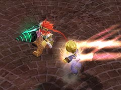
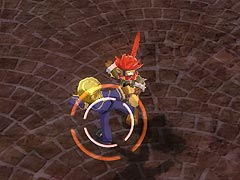
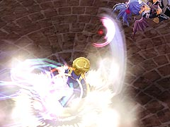

目次 > ゲームについて > 日本Falcom 攻略 > ZWEI II > G-コロッセオ > 万能執事杯
らんの眼
ZWEI II (ツヴァイ 2、ZWEI II Plus)
| 概要 | 情報 | 攻略チャート |
| フード交換 | ペットについて | ボス戦 |
| 敵キャラ一覧 | ハンターランク | G-コロッセオ |
| アイテム一覧 | ガジェット一覧 | トレジャー一覧 |
| ダンジョン一覧 | クリアデータ特典 | Plusの追加要素 |
| ZWEI II攻略へ | 目次へ戻る |
| クロード 前半 |
| クロードは常に一定の間合いを取りながら、主人公の周囲を動き回ります。そのため、攻撃を仕掛けてくるタイミングを見極めるのはかなり難しいです。 アルウェンならば、「焦熱の魔法」などで終始一方的に攻撃をし続けられますが、ラグナは攻撃後の隙を突くなどして少しずつ体力を削るしかありません。  前半のクロードの攻撃は、一気に近づいて何発かパンチをしてきます。攻撃自体は近づいてくるのに気づいてからジャンプでよけられますが、いつ使ってくるか分からないのが困りものです。 |
| クロード 中盤 |
| 中盤のクロードは、前半に使っていた攻撃以外に「秘技」を使ってきます。  「秘技ナントカカントカ(何と叫んでいるか分かりません)」と叫びつつ、突進し射程内に入ってしまうと、何発も蹴られ投げ飛ばされます。 秘技発動前に特殊なモーションがあるわけでもなく、前半の攻撃と同じように使ってくるので、こちらも常に間合いを取りたくなります。 |
| クロード 後半 |
| 後半のクロードは、通常攻撃、秘技の他に奥義を使ってきます。  「秘技」の時同様、「奥義ナントカカントカ(やっぱり何を叫んでいるか分かりません)」と叫びつつ突進し、ジャンプしながら攻撃をしてきます 「秘技」に比べ、かわすタイミングがシビアになっており、食らうダメージも増しています。 唯一の救いは、奥義発動中はオーラが出ているので、心の準備ができることくらいです。 |
| 概要 | 情報 | 攻略チャート |
| フード交換 | ペットについて | ボス戦 |
| 敵キャラ一覧 | ハンターランク | G-コロッセオ |
| アイテム一覧 | ガジェット一覧 | トレジャー一覧 |
| ダンジョン一覧 | クリアデータ特典 | Plusの追加要素 |
| ページの上部へ | ZWEI II 攻略へ | 目次へ戻る |